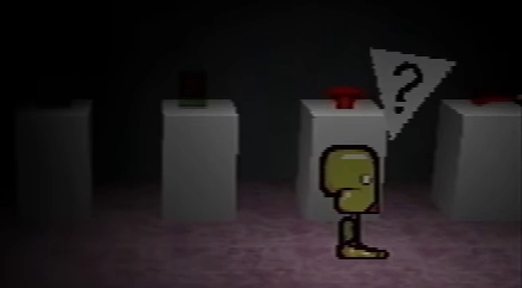
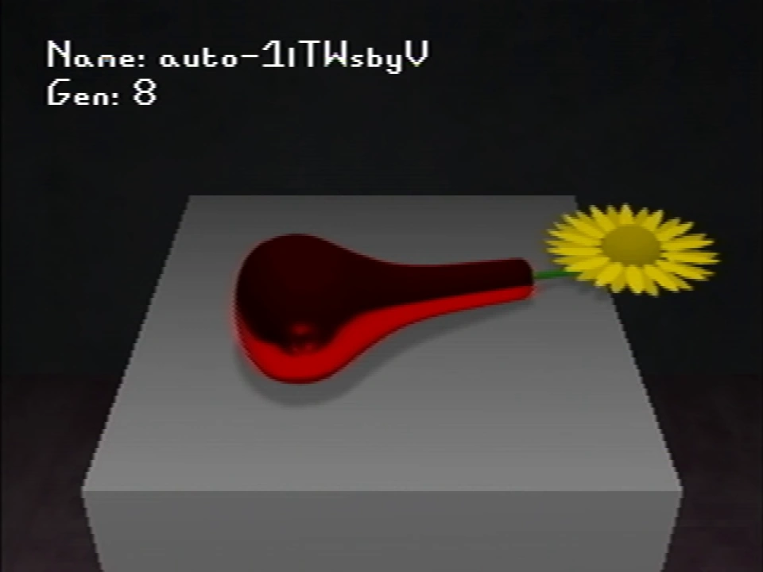

Caskets
{kind=link}

{kind=link}
The casket room
The caskets are four depictions of events in Petscop. They were created by Rainer for unknown reasons, but appear to reflect some incidents with Marvin and Care. They are located in the Road Map.
All presumably completed caskets (when they are seen outside of the Road Map) are censored by the channel managers in the videos, likely due to that Rainer describes the following regarding when the caskets are completed:
Anybody who sees them is sure to become part of the family.
History
The first appearance of censored objects on the channel is seen in Petscop 7 (see Casket 1 below). The last frame of the video contains a message from the video editor, presumably the new channel managers, summarizing the censored items:
We've had to cover something with a black box.
Right now we can't say why.Some other things we're expecting to "censor" in the future:
- "A big present with a sticker on it"
- "Something on a wall, in a black house"
- "Written on a chalkboard"
Rainer showcases previews of and summarizes the Caskets in Petscop 20, within a recording of Marvin's play-through. They are contained in a room accessed through a door on top of the Newmaker Plane, leading under it. A sign precedes the stands that reads:
Caskets
When these are done, they will be great.
Anybody who sees them is sure to become part of the family.
List of caskets
Casket 1
{kind=link}

{kind=link}
Rainer's description goes as follows:
This one is called "Casket 1".
You showed Care her red, blurry reflection in a vase.
You said, "Do you see that? Look at how ugly you are now."
Care squinted her eyes.
The reflection wasn’t clear at all, but as you began to describe her grisly deformities, she began to “see” them.
"Nobody wants to see you like this," you said.
But she soon escaped, and bravely returned home.
In her bathroom mirror, she saw a clear picture.
The picture shown in Petscop 20 shows a red flower vase, laying on its side, containing a yellow flower.
In Petscop 7, Paul enters a face combination in the Child Library that is Care’s face with Mike’s eyebrows. On the table in its corresponding room, there is a censored object. Paul's immediate reaction is to remark "I don't know, maybe that's just something that it puts in any room." The video is then cut to text in editing, which provides a list of censors that appear to correlate to the other caskets.
Casket 2

{kind=link}
Rainer's description goes as follows:
This one is called "Casket 2".
As I painted, I watched Care dance around the house.
She liked to spin. She became a blur.
But in that blur, somehow, as she spun around...
From 45 degrees, to 90, to 180, to 360, to 720, 1080, 1440, 1800, 2160, winding, tightening, tightening
I was stunned by pure horror and disgust.
The image in Petscop 20 shows an upside-down red pyramid, whose core resembles Care's head.
In Petscop 9, Paul enters the party room. Paul interacts with "a big present with a sticker on it", and it opens, a red pyramid object emerging, growing to a larger size and spinning. Once something starts seeming to appear within the pyramid, its middle is censored. Paul reacts in a negatively surprised manner, and appears to try to avoid having the pyramid in view while he continues looking around the party room. This corresponds to "A big present with a sticker on it" from the list of future censors in Petscop 7.
Casket 3


{kind=link}
Rainer's description goes as follows:
This one is called "Casket 3".
After kicking you out of the house, your wife started painting the walls black, to cover the stencils.
I helped. She made it feel urgent.
That Saturday, busy with work, she pinned a note.
It contained a list of objects.
In Petscop 20, this object shows a miniature panorama of part of Marvin's room. On the wall there is the outline of two red hands, in similar position to the hands on Care NLM.
In Petscop 14, Paul accesses Marvin's bedroom, where one wall on the far right side has a censored object on it. Paul was only able to access Marvin's room using a recording, so at this point he has not seen the censor himself. Later on in the video, Paul pushes a bucket into the bedroom, and uses a paint roller to cover over the censored object in black paint. After some segments of the wall are covered in paint, the censor is removed. This corresponds to "Something on a wall, in a black house" from the list of future censors in Petscop 7.
Casket 4


{kind=link}
Rainer's description goes as follows:
This one is called "Casket 4".
Five words, written on a chalkboard, in the dirty building that you inhabit.
The image in Petscop 20 shows a chalkboard with five, illegible words in red writing.
In Petscop 23, the classroom on the school's third floor has a chalkboard with illegible red text on the bottom left, which is censored whenever the player zooms in on it (by interacting with it). This corresponds to "Written on a chalkboard" from the list of future censors in Petscop 7.
Theories
When describing Casket 3, Rainer mentions a list of objects that was created by Anna: "That Saturday, busy with work, she pinned a note. It contained a list of objects." This may be the same list that the channel managers provided in Petscop 7, or that it may have derived from Anna's list.
Paul is revealed to be, or perhaps becomes, closer to the family and more ingrained in Petscop with each casket he views. This culminates in the top floor of the school in the final episode. This is why the objects were censored. The viewer can see three of the caskets, but cannot read the five words on a chalkboard, preventing them from having Paul's fate.
The head of the sprite used for Paul's replayed inputs in Petscop 12 resembles Casket 2.